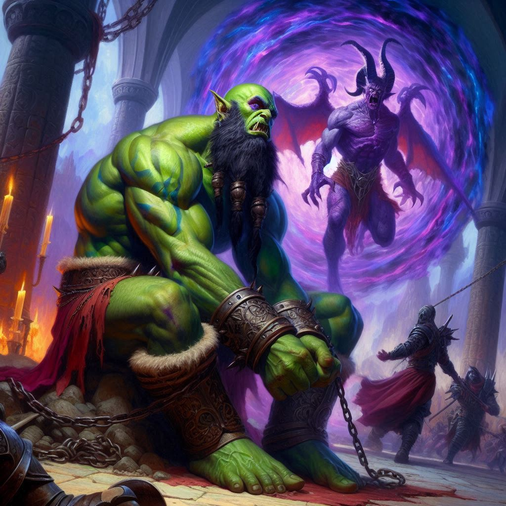

The Unexpected Sacrifice
Almost instantly the dark temple at the heart of Umbra’Thal has become a warzone. Ranks of dark elf warriors have emerged from the shadows, descending on your small band with relentless force. The battlefield surges around you, chaotic and unrelenting. Steel clashes against steel, and the chanting of dark elves reverberates through the shadowy realm of Umbra’Thal. The air itself seems heavy, charged with the weight of ancient magic. As you fight, your eyes flicker to Jorsh—he’s no longer the boy you once knew. He’s a force, raw power pulsing from him, his dark magic swirling in torrents as he holds back the dark elf army.
“Kira! I can’t control the power without you,” Jorsh calls out, the dark energy shooting from his fingertips. The shield of energy is getting smaller as the army of dark elves presses toward you. Jorsh looks at you, his eyes pleading. “I didn’t leave you because I stopped loving you. I left you because I needed to find a way to save Belladonna. I left you because I love you.”
Emotion swells in your chest. That old infatuation. Mixed with anger and resentment. “Why do you tell me this now? Why now at the end?”
Jorsh falls to his knees, the dark power crushing him to the earth. He strains to keep the force field active, keeping the dark elves at bay for a few seconds more. “Kira, if you ever loved me, please summon your feelings for me now. Only your love can protect me from the evil power of Yaldaboath!”
You rush to Jorsh’s side, ignoring Elias’s crestfallen countenance. “Jorsh,” you exclaim, wrapping your arms around his crumpled shoulders. “I love you. I’ve always loved you.”
Jorsh inhales deeply. His power is magnified, surging through him like a storm. His eyes burn with a dark, intoxicating energy, and you can’t help but feel the pull. It’s like nothing you’ve ever experienced—an exhilarating, terrifying connection that tugs at your very soul.
But Elias is here, too. Fighting beside you with unwavering focus, cutting down dark elves with quick, precise strikes. His presence is grounding, pulling you back to reality. “Kira!” he shouts, voice strained as he fends off another attack. “We need to stay together! We can still win this, but we have to trust each other!”
You want to trust him, but every glance toward Jorsh makes you question everything. His power, now amplified by your love, is undeniable, a force you never imagined. It's intoxicating, drawing you in deeper with each moment. But is it love you feel for him? Or the allure of the darkness he now wields?
Suddenly, a cold voice cuts through the chaos. Varis Nythal, the Minister of Trade turned monarch of the dark elves, steps forward, his twisted grin sending a shiver down your spine. “You’re too late,” he hisses, dark magic crackling at his fingertips. “Even with Jorsh’s new strength, you cannot stop me.”
He raises his hands, and the ground trembles beneath you, splitting open to reveal a massive sacrificial altar, gleaming under the dim light of Tor’vail’s perpetual twilight. Chained to the stone, broken and defeated, is Baider. His once-powerful frame is slumped, his eyes dim.
“No,” you whisper, taking a step toward him, your heart clenching at the sight. Baider, the half-orc blacksmith who raised you like his own, is now a prisoner of Varis’s dark magic. “How did this happen?” Your mind reels, trying to understand how Baider could have been targeted. But it is all too clear. The Minister of Trade has been orchestrating all of this for months… possibly years.
Varis’s laughter echoes across the battlefield. “Yes, Baider. The perfect sacrifice to Yaldaboath, the demon lord of Hemlock Caverns. His blood will seal the portals between our realms, allowing me to invade Belladonna at last.”
“Not if I stop you first!” Jorsh growls, stepping forward, his power flaring like a flame caught in the wind. His eyes flick to you, filled with a burning intensity. “Kira, with you by my side, we can end him—end this war! Vyrethane! Kira, say the word and join me.”
Vyrethane. The name of the mountain where you shared your first kiss. The most magical place in the world to both of you. You swore an oath to each other that day and “Vyrethane” became your magic word… the word that symbolized your bond to each other. But then, within a few months, Jorsh was gone. And you were alone. Abandoned by the boy you gave your whole heart to. And now he has come back. Invoking your magic word. Begging you to do the same.
Your heart skips a beat at his words, the weight of the moment crashing down on you. Jorsh’s gaze is piercing, his power calling to you, drawing you in like a moth to a flame. There’s a connection here, something dark and primal, but undeniably real. But at what cost?
Elias grabs your arm, his voice desperate. “Kira, don’t listen to him! We don’t need his power. We can destroy the portals, cut off Varis’s control over the dark elves, and save Baider. Help me stop this before it’s too late!”
You look between them, torn in two. Jorsh’s power hums in the air, an intoxicating promise of victory and control. With him, you could end this war. But Elias—Elias has always been by your side, steady and true. And Baider—he’s lying there, helpless, waiting for you.

Before you can move, Varis raises his hand, magic swirling at his fingertips. “You’re running out of time,” he sneers. “Yaldaboath hungers for blood, and Baider’s death will seal your fate.”
Time seems to slow as you stand at the crossroads of destiny, your heart and mind in turmoil. Do you trust Jorsh, the boy you once loved, now a man wielding immense power, to end this war with you by his side? Or do you stand by Elias, the one who has never faltered, and destroy the portals, stopping Varis’s dark magic from spreading into Belladonna?